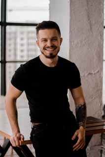

EN
CV ukr

Курячий Владислав
Харків, Україна
Контакти та соціальні мережі
Освіта
-
НТУ "ХПІ"
економіка підприємства, Харків Вища, з 2010 по 2016 (6 років)
Додаткова Освіта
-
Lemon School, графічний дизайнер (2019 2 місяця)
-
Таргеторіум Pro (2022, 2 місяці)
Професійні навички
- FB ADS Manager
- HTML
- Java Script
Індивідуальні риси
- стресотійкість
- вміння працювати в команді
- комунікабильність
Досвід роботи
- Media Bayer
з 02.2020 по нині (2 роки 2 місяці)Media Bayer, Харків (Маркетінг)
Підготовка креативівАналіз трафіку у рекламних кабінетахНалаштування рекламних кампаній Фейсбук та ІнстаграмРобота над оптимізацією рекламних витратОптимізація рекламних кампанійПобудова вирв трафікуЗалучення якісних лідів за допомогою рекламиОформлення звітів за результатами роботиДосягнення за 2 роки роботи у сфері реклами та маркетингу:Заробив клієнтам 800+тис$Досвід у 120+ проектах із різних ніш